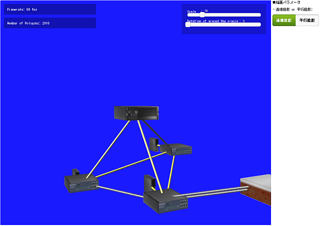
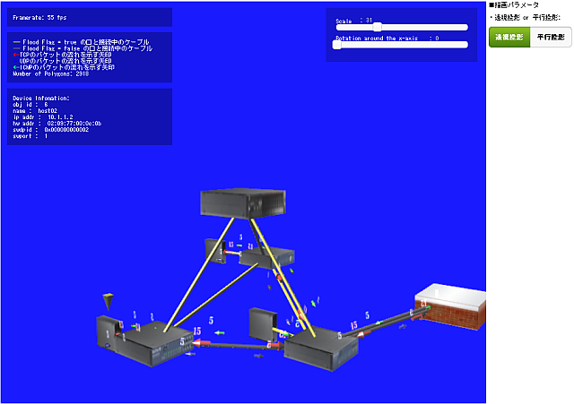
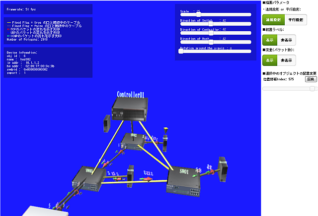
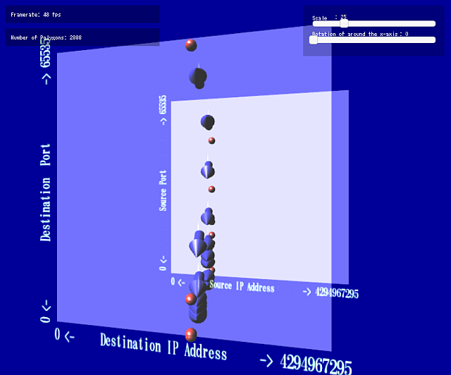
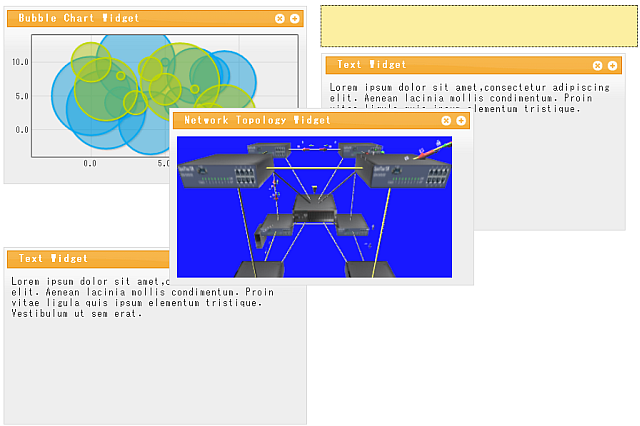

サンプル¶
WebGL¶
| イメージ | 説明 |
|---|---|
sample01:
 |
一つのシェーダプログラムを用いて作成したWebGLのサンプルです。
|
sample02:
 |
複数のシェーダプログラムを用いて作成したWebGLのサンプルです。 |
Network Visualization¶
| イメージ | 説明 |
|---|---|
| sample03:  | OpenFlowネットワーク下で形成された仮想ネットワークの構成を見える化してみたサンプルです。
|
sample04:
 |
OpenFlowネットワーク下で形成された仮想ネットワークの構成を見える化してみたサンプルです。 sample03を改造し、次の機能に対応しました。
|
| sample05:  | OpenFlowネットワーク下で形成された仮想ネットワークの構成を見える化してみたサンプルです。 sample04を改造し、次の機能に対応しました。
|
| sample06:  | OpenFlowネットワーク下で形成された仮想ネットワークの構成を見える化してみたサンプルです。 sample05を改造し、次の機能に対応しました。
|
| sample07:  | Nmapのようなネットワークスキャナを使って、ポートスキャンを実行した際の通信の特性を出力したサンプルです。 |
sample08:
 |
OpenFlowネットワーク下で形成された仮想ネットワークの構成を見える化してみたサンプルです。 sample06を改造し、次の機能に対応しました。
|
sample09:
 |
インターネットから流入、またはインターネットへ流出する通信を見える化したサンプルです。 経度、緯度の情報をインプットとしてネットワークトラフィックを3D空間上に出力します。
|
{kind=link}
{kind=link}
{kind=link}
{kind=link}
活用事例¶
This contents is under construction.
| イメージ | 説明 |
|---|---|
jqplot01:
 |
glNetVizで出力した3Dオブジェクトの上に jqPlot の2Dグラフを重ね合わせて出力したサンプルです。 |
| sdashboard01:  | glNetVizと sDashboard を組み合わせてみたサンプルです。 |
{kind=link}
- jqPlot + glNetViz
- sDashboard + glNetViz
- mongoDB + fluentd + glNetViz
- nox + glNetViz
- pox + glNetViz
- trema + glNetViz
- Vimage Jail + glNetViz
- Android + PhoneGap + glNetViz
- libgeoip + glNetViz
- マルウェアの動的解析の自動化